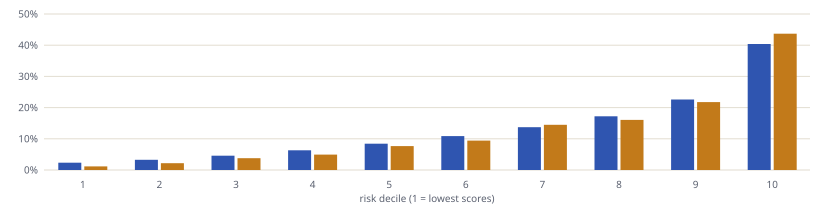
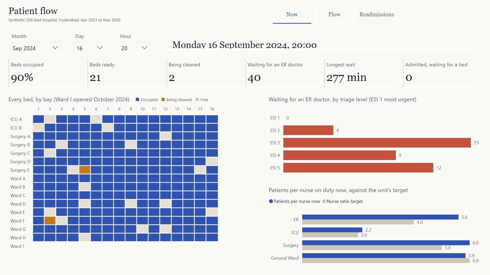
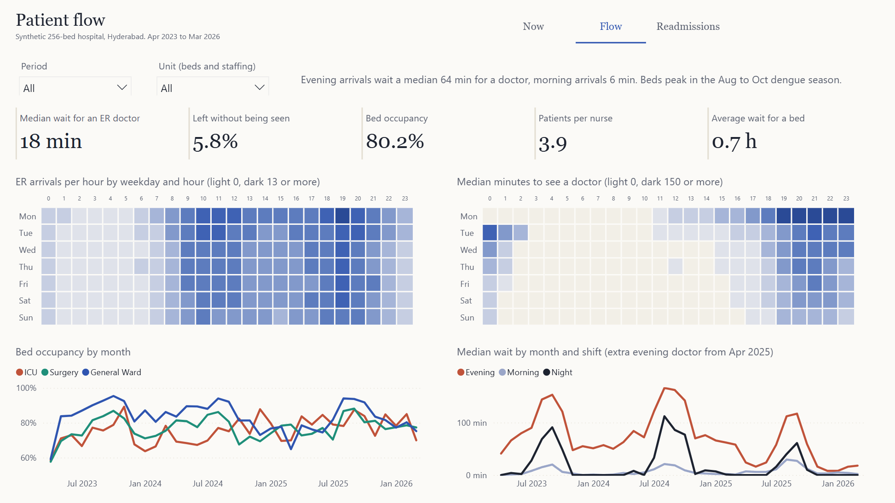
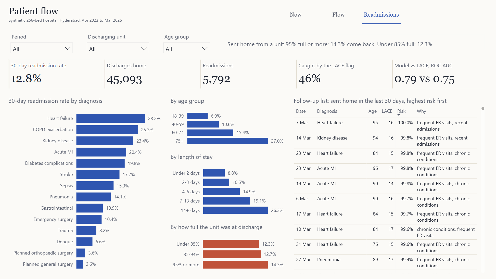
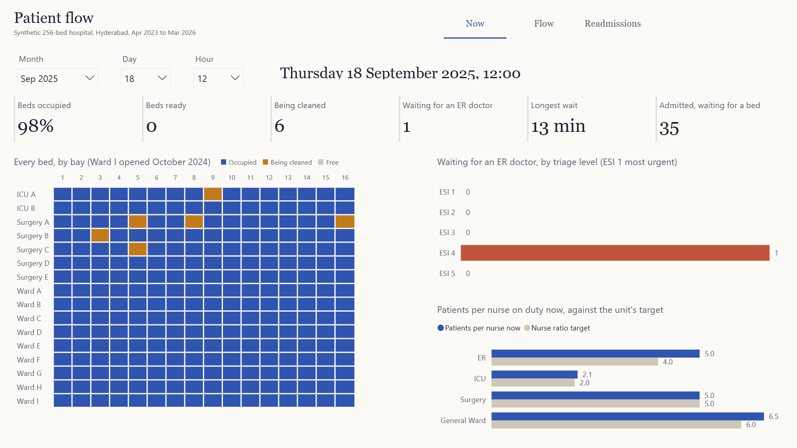
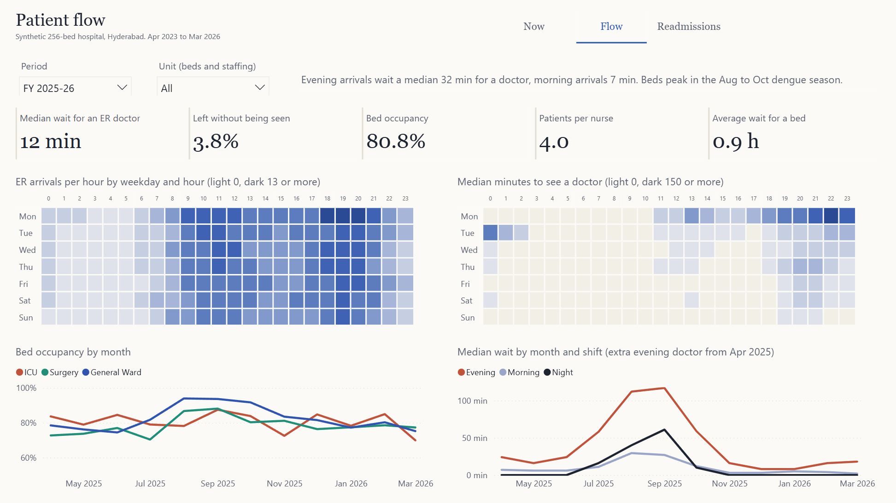

Where patients wait, and who comes back
An end-to-end hospital operations build: three years of a simulated 256-bed hospital in Hyderabad, a tested SQL model in DuckDB, a 30-day readmission model measured against the LACE index, and a Power BI report generated entirely from code.
The problem
A hospital's operational data is spread across systems that rarely talk: the ER system records arrivals, triage and the first doctor; the admission system records who was admitted and why; the bed board records which bed each patient lay in and when it was cleaned; the nursing roster records who was on shift. Each answers a narrow question. The questions an operations lead asks cut across all of them: when does demand peak and are we staffed for it, do we have beds right now, how long do people wait, and who is likely to come back?
The brief was a report with two modes: Now, the hospital at any chosen hour, and Review, patient flow and readmissions over a chosen period, with every number traceable to source rows.
Why synthetic data. Real patient records can't be published. Instead of a toy table, I wrote a simulator that produces the exports a hospital analyst would actually pull, with known effects planted in it. That lets me check whether the analysis recovers what I know is there.
The hospital and the data
A fictional multi-specialty hospital in Hyderabad, April 2023 to March 2026: an ER plus 256 inpatient beds (ICU 32, Surgery 80, General Ward 144, of which one 16-bed ward bay opened in October 2024). The simulator (src/generate.py, seeded, so it's reproducible) is one event-driven loop where every part affects the others:
- ER: about 154 arrivals a day, peaking in the evening, on Mondays and in the August to October dengue season. Patients are triaged (ESI 1 to 5) and queue for a doctor; low-acuity patients leave if the wait outruns their patience.
- Beds: admitted patients wait in the ER until a bed is free; every bed needs cleaning after a patient; ICU patients keep their ICU bed until a ward bed frees up; ward patients waiting over four hours take a spare surgical bed.
- Staffing: a flat roster of doctors and nurses per shift. In April 2025 the ER added one evening doctor and two evening nurses.
- Readmissions: every patient sent home has a planted 30-day risk driven by diagnosis, age, chronic conditions, prior ER visits, very short or long stays, weekend discharge and being sent home early when the unit is full. Readmitted patients come back through the ER.
It writes nine raw exports (patients, ER visits, admissions, comorbidities, bed stays, beds, staff roster, shifts and unit targets), 483,589 rows in all. The ER export behaves like a real one: day-first timestamps, triage codes as text, and 674 rows sent twice.
The pipeline
Four SQL files, each one layer: staging types the raw exports and removes the resent rows; model builds the dimensions, the cleaned facts and an hourly census of every unit; features builds the readmission inputs, labels and the LACE score; marts produce report-ready tables. src/pipeline.py runs them, trains the model, runs the checks, and only then exports.
- One census, every hour. For each of the 26,304 hours and four units the model counts patients in beds, beds being cleaned, patients waiting for an ER doctor, admitted patients still in the ER, and nurses and doctors on duty. Occupancy, staffing ratios and the Now page all read from this one table, so they can't disagree.
- Interval joins, not loops. "Who was in which bed at 20:00" is a range join between hours and stays; DuckDB runs it for 58,545 bed stays in seconds.
- Readmissions defined as the standard measures do. An index discharge is a patient sent home; deaths, transfers and discharges against medical advice are excluded; a readmission is an emergency admission within 30 days. The last month of discharges has no outcome yet and is never counted as "not readmitted".
Proving it
The pipeline refuses to export unless every check returns zero failing rows.
| Check | What it guarantees |
|---|---|
| No bed holds two patients at once | The bed board is physically possible. |
| A bed is cleaned before the next patient | Turnaround time is real, not skipped. |
| Bed stays join end to end | Each admission's stays run without gaps from admission to discharge, through every transfer. |
| Hourly census matches a direct count | The census table agrees with the raw bed stays and ER visits it summarises. |
| Every admitted ER visit has exactly one admission | ER and admission records agree, to the minute. |
| Readmission flag matches a direct recount | The outcome the model learns is correct for every discharge. |
| The model never sees sex, payer or age group | Protected and socioeconomic attributes stay out of the score. |
Plus eleven more: resent rows removed and nothing else; ER timestamps in order; patients who left unseen were never seen; beds used only while in service; census never above beds in service; the roster covers every hour of every unit; index discharges exclude deaths, transfers and discharges against advice; no outcome without 30 days of follow-up; LACE parts in range; one risk score per discharge.
The checks found real bugs. On the first full run, four checks failed: two patients in one bed, a bed reused before cleaning, a stay ending before it began, and a unit holding more patients than beds. The cause was in the simulator: an admission decision could be scheduled earlier than the moment the doctor finished, so events ran out of order. Fixed at the source, all 18 pass.
Testing the tests. Each check was then run against data broken on purpose in the way it guards against (a second patient in a bed, a census off by one, a flipped readmission flag, a protected feature added). All 18 breaks were caught.
Report matches source. 63 report numbers, across the whole period, two filtered periods, three age and unit filters and three moments on the Now page, were compared with independent DuckDB queries. The first comparison found two report bugs: the left-without-being-seen rate counted visits still open at the cut-off, and the ER queue showed blank instead of zero at a quiet hour. Both were fixed; all 63 now match.
Same answer every run. Two full rebuilds from scratch produce identical raw files, model tables and Power BI project.
The readmission model
The question is practical: of the patients sent home today, who should get a follow-up call? Hospitals often answer it with the LACE index (Length of stay, Acuity, Comorbidity, Emergency visits), a simple score where 10 or more means high risk. The model has to beat that to be worth having.
- Honest validation: trained on discharges up to September 2024 (22,907), tested on discharges from April 2025 (14,754). The six months between are left out, so the test is a future the model never saw.
- Features: ten inputs known at discharge: age, length of stay, Charlson comorbidity score, ER visits in the last six months, admissions in the last year, unit occupancy at discharge, ICU stay, weekend discharge, emergency or planned admission, and diagnosis. Sex and payer are excluded, and a check enforces it.
| Test period | ROC AUC | Precision-recall AUC | Readmissions caught, top 19.3% |
|---|---|---|---|
| LACE index | 0.749 | 0.320 | 47.4% |
| Gradient boosting | 0.784 | 0.381 | 50.3% |
| Logistic regression (chosen) | 0.786 | 0.383 | 51.4% |
The LACE flag marks 19.3% of discharges as high risk. Flagging the same number of patients, the model catches 51.4% of readmissions against LACE's 47.4%: about 73 more of the test year's 1,847 readmissions, with the same follow-up workload. Logistic regression was chosen because gradient boosting didn't beat it, and a hospital can read its coefficients.
Calibration

Predicted and actual rates track each other across the range, so a score can be read as a probability, not only a rank.
Fairness
| Group, test period | Actual rate | Flagged in top 10% | ROC AUC |
|---|---|---|---|
| Women | 13.1% | 10.7% | 0.795 |
| Men | 12.0% | 9.4% | 0.777 |
| Cash | 12.9% | 10.5% | 0.787 |
| Private insurance | 12.6% | 10.9% | 0.793 |
| Aarogyasri (state scheme) | 12.0% | 8.6% | 0.786 |
| CGHS (central government) | 11.8% | 8.7% | 0.741 |
The model never sees sex or payer, and flags each group roughly in line with how often it actually comes back. It ranks CGHS patients less well (0.741), the smallest group at 1,064 discharges; that is worth watching rather than over-reading. Age is a feature, by design: patients over 75 come back 27% of the time and 42% of them land in the top decile, which is clinically real, not bias.
Why each patient is flagged
Each discharge comes with up to two reasons. The model is re-run with one factor reset to a typical value (median stay, median occupancy, no weekend discharge, no prior ER visits, and so on), and the factors that lower the risk most are listed. Among recent high-risk discharges the usual reasons are chronic conditions, older age and frequent ER visits.
The report
The structure is two modes rather than one dashboard. Now answers "what is happening at this hour", Review answers "how did we do over this period". Three pages, one navigation bar.

Design decisions
- Now and Review as two modes. An operations lead uses the report two ways: a glance at this hour, and a look back over a month. Mixing them on one page makes both worse.
- "Real time" as a time slider. The data is historical, so the Now page shows any chosen hour exactly as it was, instead of pretending to stream.
- Every bed visible. A bed grid shows what an occupancy percentage hides: whether free beds exist, and whether they're stuck waiting for cleaning.
- Colour encodes meaning. Blue for occupied and neutral measures, ochre for beds being cleaned, rust for the ER queue and bed pressure. Heatmaps use one blue scale from paper to ink.
- A follow-up list, not only a score. The model's output is a ranked list of recent discharges with reasons, the form a care coordinator would actually use.
Patient flow

Readmissions

Same report, other settings


What the data says
Built as code
The Power BI report is a PBIP project, Power BI's text-based format: powerbi/build_pbip.py writes the semantic model (tables, relationships and 36 DAX measures in TMDL) and every page and visual (PBIR JSON) from the DuckDB schema. Power BI's own TMDL parser validates the model before it is opened. Rebuilding everything takes three commands:
python src/generate.py python src/pipeline.py python powerbi/build_pbip.py
Limits and next steps
- Synthetic data: the model can only learn what the simulator planted. The value shown here is the method: an hourly census that reconciles to source, out-of-time validation, a like-for-like comparison with LACE, and fairness checks.
- Readmissions to other hospitals aren't visible, as in most single-hospital data.
- The roster is planned staffing; actual attendance is modelled only as occasional uncovered sick leave.
- Next: test the 19:00 to 03:00 nurse shift in the simulator before recommending it, and add a follow-up call outcome to measure whether calls reduce readmissions.